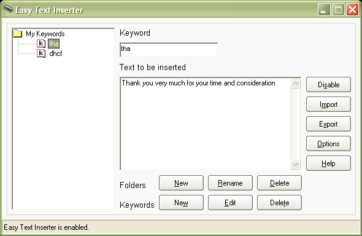

| Easy Text Inserter automate typing of repetitive phrases in any text editor. Easy Text Inserter automates typing of repetitive phrases in any text editor. The Main Idea of this Software is to save your time when typing repetitive phrases. Just you assign a keyword and the corresponding phrase then you hit the keyword whenever you need to type the phrase and Easy Text Inserter will replace it with the corresponding phrase(s). For example if you type the keyword (tha), it will be replaced by the phrase "Thank you very much for your time and consideration".  System Requirements Intel Pentium, Celeron, AMD or compatible processor Windows 98/ME/NT4/2000/XP/2003/Vista |